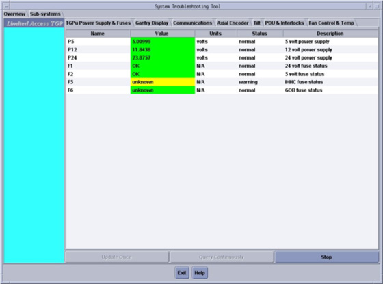

Operating Documentation
Direction 5181178-800, Rev# 16
BrightSpeed Select Service Methods Gen
Module Version 6.0, Version Date 5/23/07
Operating Documentation |
| Last Revised on: | 23 May 2007 |
The status tool is started from the Common Service Desktop (CSD) and displays the current system hardware conditions. To access this tool:
Navigate to the CSD.
Click on the Diagnostic tab.
Locate the System Troubleshooting Tool near the bottom of the menu list.
Click on the tool to launch it.
| NOTE: | The directions given in this document are a general overview
of how to use the System Troubleshooting Tool to display system data. The System Troubleshooting Tool is designed to service and troubleshoot the system while the system is energized. Energized Left Side service or troubleshooting is not permitted for this product. Under no circumstances should an engineer service the left side of this equipment while the system is energized. |
The Overview screen is displayed when the System Troubleshooting Tool is launched. The overview screen consists of the following:
The overview panel: describes the gantry left-side sub-system troubleshooting and service information.
The sub-system Status Display: describes how the tool displays data and status information.
The subsystem screen is displayed when the Sub-system tab is selected. (See Illustration 1.)
| NOTE: | To display data using the System Troubleshooting Tool, your system must be operational, and some displays require user inputs with the system scanning to see data change results. |
Illustration 1: System Troubleshooting Tool

Name: describes the tasks or item being displayed.
Value: describes the data displayed.
Units: describes the units of measure.
Status: not used in this release.
Description: describes the tool or test being run.
| NOTE: | The Green, Yellow and Red indicators are only active for
power supply voltages. Do not use color only as visual indicators of system operation. |
The System Troubleshooting Tool can be started from the CSD, or it can run remotely on a laptop when it is set up using the Laptop Setup Procedure and shipped Ethernet cable. To use your laptop, refer to Connecting Laptop to Console procedure.
The display provides the following functions/sequence of events:
When the tool is started, the hardware/system conditions is queried in a continuous mode. The display is updated every second and is in the Continuously Update mode.
Pressing the [Stop] button releases the Continuously Update mode.
Pressing the [Update Once] button causes the values to be updated once.
The colors displayed are based on the following conditions:
| NOTE: | The Yellow and Red display colors only apply to the power supplies. |
Spec limits
Green: data in range
Yellow: data upper warning
Yellow: data low warning
Red: data below lower limit
Red: data above upper limit
Table 1: TGPU Power Supply & Fuses (General)
Table 2: Gantry Display
Table 3: Communications
Table 4 : Axial Encoder
Table 5 : Tilt
Table 6: PDU & Interlocks
Table 7 : Fan Control & Temp
| NOTE: | Screens shown in this document are representative of what
is shown on the console or laptop screen and contains additional data
that is not shown on the console or laptop screens. Items on the screen may change location or order from system-to-system or software-to-software, but the intended use is the same. |
| NOTE: | Colors may not change or update for fuse status. Manual non-energized troubleshooting is required to check fuses, cables, and connections. |
Table 1: TGPU Power Supply & Fuses (General)
| Name | Value | Status | Description | Units | Data Type | Extended Description |
| .P5 | continues data | normal/warning/error | 5 volt power supply | volts | Actual - continues data | Actual TGP supply voltage displayed. Refresh display as needed. |
| .P12 | continues data | normal/warning/error | 12 volt power supply | volts | Actual - continues data | Actual TGP supply voltage displayed. Refresh display as needed. |
| .P24 | continues data | normal/warning/error | 24 volt power supply | volts | Actual - continues data | Actual TGP supply voltage displayed. Refresh display as needed. |
| .F1 24V | OK/unknown | normal/warning | Visual Indicator | N/A | on/off indicator | Review TGPU 24 volt power supply status information. If supply is OK, turn off A1 power and check fuse. |
| F2 5V | OK | normal/warning | Visual Indicator | N/A | on/off indicator | Review TGPU 5 volt power supply status information. If supply is OK, turn off A1 power and check fuse. |
| F5 | Manual Test | Unknown shown No machine data available | Visual Indicator | N/A | Manual Test | IHHC Power Communication failure. LOTO A1 and check fuses. |
| .F6 | Manual Test | Unknown shown No machine data available | GOB fuse status | N/A | Manual Test | Check GOB option for connectivity. Turn off A1 power and check fuse. |
| NOTE: | Colors may not change or update for fuse status. Manual non-energized troubleshooting is required to check fuses, cables, and connections. |
Table 2: Gantry Display
| Name | Value | Status | Description | Units | Data Type | Extended Description |
| Gantry Tilt | continues data | Visual Indicator | Gantry tilt angle | deg | Actual -continues data | Displays actual tilt angle data when tilt is enabled and active. Press the tilt button to check status. Display should match gantry display. Tool can set tilt speed at gantry. |
| Table Elevation | continues data | Visual Indicator | Table elevation | mm | Actual -continues data | Displays actual table elevation data when the table is enabled and moving. Press the table elevation button to check status. Display should match gantry display. |
| Cradle Position | continues data | Visual Indicator | Cradle position | mm | Actual -continues data | Displays actual cradle position data when the table cradle is enabled and moving. Press the table in/out button to check status. Display should match gantry display. |
| NOTE: | Table operation is required to see data change. |
Table 3: Communications
| Name | Value | Status | Description | Units | Data Type | Extended Description |
| .GUIF State | on/off | Normal | Gantry display and control state | N/A | Visual Indicator on/off indicator | Need to check for no GUIF display updates. |
| .CFC State | on/off data | Normal | VCT CFC communication state. Not found on non-VCT products | N/A | Visual Indicator on/off indicator | Stationary 48 volt supply status and fan controller power activity. Active communication indicates good status. |
| .Axial State | on/off data | Normal | Axial communication state | N/A | Visual Indicator on/off indicator | On or flashing indicates communication is active. Off indicates no active communication with that module. |
| .Table State | on/off data | Normal | Table ready state | N/A | Visual Indicator on/off indicator | On or flashing indicates communication is active. Off indicates no active communication with that module. |
| LS COMM State | on/off data | Normal | LSCOMM communication state | N/A | Visual Indicator on/off indicator | On or flashing indicates communication is active. Off indicates no active communication with that module. |
| Drive Enable | on/off data | Normal | Drive enable | N/A | Visual Indicator on/off indicator | On or flashing indicates communication is active. Off indicates no active communication with that module |
| NOTE: | Manual non-energized troubleshooting is required to check fuses, cables, and connections. An exposure may be required to see changing results. |
Table 4: Axial Encoder
| Name | Value | Status | Description | Units | Data Type | Extended Description |
| Home Flag | on/off data | Normal | Gantry home flag | Visual Indicator | Visual Indicator On/Off Data | This gantry home flag indicator is a visual indicator that the home flag is within the detect area. |
| Gantry Position | continues data | Normal | Gantry encoder value | counts | Visual Indicator Actual - continues data | Displays gantry encoder pulses. If pluses are present and changing the encoder is OK. |
| Gantry Angle | continues data | Normal | Gantry rotational angle | deg | Visual Indicator Actual - continues data | Displays actual tilt angle data when tilt is enabled and active. Press the tilt button to check status. |
| Axial Speed | continues data | Normal | Gantry rotational speed | sec/rev | Visual Indicator Actual - continues data | Displays actual gantry speed data when gantry is rotating. |
| Axial Brake | on/off data | Normal | Axial brake | Visual Indicator | Visual Indicator on/off indicator | Visual indicator that axial break command is active. |
| NOTE: | Manual non-energized troubleshooting is required to check fuses, cables, and connections. An exposure may be required to see changing results. |
Table 5: Tilt
| Name | Value | Status | Description | Units | Data Type | Extended Description |
| Tilt Enable data. | on/off data | Normal | Tilt enable | Visual Indicator | Visual Indicator Actual - continues data | Displays tilt-enable command when tilt is requested. Press the tilt button to check status. |
| Tilt Forward | on/off data | Normal | Tilt forward | Visual Indicator | Visual Indicator Actual - continues data | Displays Tilt direction indicator. Press the tilt button to check status direction command. |
| Tilt Backward | on/off data | Normal | Tilt back | Visual Indicator | Visual Indicator Actual - continues data | Displays Tilt direction indicator. Press the tilt button to check status direction command. |
| Tilt Angle | continues data | Normal | Gantry tilt angle | deg | Visual Indicator Actual - continues data | Displays actual tilt angle data when tilt is enabled and active. Press the tilt button to check status. Tilt angle at zero = 0.14 degrees. |
| Tilt Speed | continues data | Normal | Gantry tilt Speed | deg | Visual Indicator Actual -continues data | Displays actual tilt speed data when tilt is enabled and active. Press the tilt button to check status. Tilt speed = 1 degree/sec. Best when used with laptop to set tilt speed. |
| NOTE: | Operator interactions are required to see the data change. |
Table 6: PDU & Interlocks
| Name | Value | Status | Description | Units | Data Type | Extended Description |
| Axial Contactor | on/off data | Axial contactor state | Visual Indicator | Visual Indicator On/Off Data | Displays axial drive contactor state. Actively updates to changing conditions. | |
| HVDC Contactor | on/off data | High voltage DC contactor state | N/A | Visual Indicator On/Off Data | Displays E-Stop active state. | |
| Estop State | on/off data | normal/error | E-stop pressed | Visual Indicator | Visual Indicator On/Off Data | Displays high voltage contactor state. Actively updates to changing conditions. |
| Door Interlock 24 VDC | Open/closed state | normal/error | 24V interlock state. | Visual Indicator | Visual Indicator open/closed | Displays 24V interlock state. Green shown when the door and all interlocks are closed. Refer to functional block diagrams to troubleshoot this failure. Actively updates to changing conditions by opening any one of the gantry interlocks. DO NOT troubleshoot this ENERGIZED or while on the gantry left side with the TGPU cover removed. |
| Xray ON | on/off data | normal/error | X-ray exposure | Visual Indicator | Visual Indicator On/Off Data | Displays X-ray exposure command x-ray on. Actively updates to changing conditions. |
| Xray Enable | on/off data | normal/error | X-ray exposure enable | Visual Indicator | Visual Indicator On/Off Data | Displays X-ray exposure enable contactor. Actively updates to changing conditions. |
| Service Mode | on/off data | normal/error | Service mode | Visual Indicator | Visual Indicator On/Off Data | Displays service switch jog mode status. Actively updates to changing conditions. |
| Jog Mode | on/off data | normal/test mode | Jog mode | Visual Indicator | Visual Indicator On/Off Data | Displays service switch status. Actively updates to changing conditions. |
| Exposure Command | Open/closed state | normal/test mode | Exposure Interlock | Visual Indicator | Visual Indicator open/closed | Closes when exposure command interlocks are closed. |
| NOTE: | Manual non-energized troubleshooting is required to check fuses, cables, and connections. An exposure may be required to see changing results. |
Table 7: Fan Control & Temp
| Name | Value | Status | Description | Units | Data Type | Extended Description |
| On board Temp | continues data | Visual Indicator | Onboard temperature sensor | Degc | Visual Indicator Actual -continues data | Displays TGPU onboard temperature. |
For help with the System Troubleshooting Tool, select Help from the bottom of the Sub-system tab. Help refers the user to the systems service manual.
Turning off the gantry power using the service switch, or the sudden loss of power while using the System Troubleshooting Tool, results in a reset message displayed on the user screen. If this occurs, follow the on-screen instruction to recover.
To exit the System Troubleshooting Tool, select [Exit] from the bottom of the Sub-system tab.